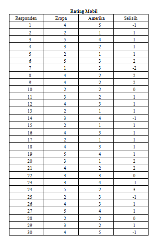
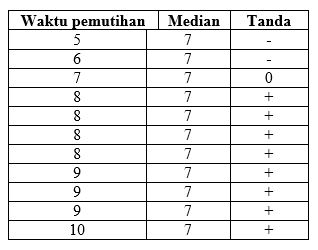
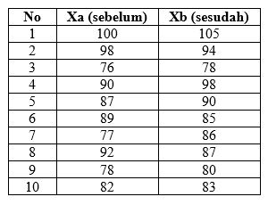
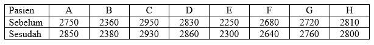
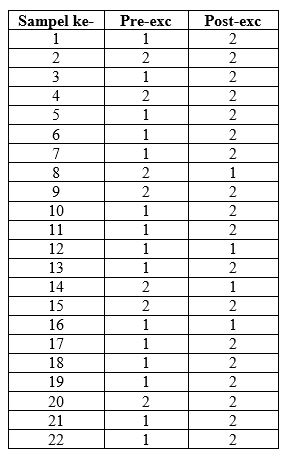
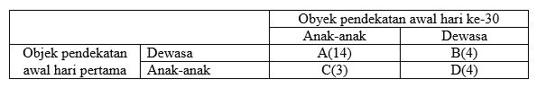

Created by Rizky Dwi Novyantika / @rdnovyantika
Uji Dua Sampel Berpasangan artinya sampel dengan subjek yang sama namun mengalami dua perlakuan atau pengukuran yang berbeda. Kapan menggunakan uji dependent?
Uji tanda adalah Uji yang digunakan untuk menguji dua kelompok data yang berpasangan
Sebuah percobaan untuk menentukan perbandingan kenyamanan 2 jenis mobil (mobil Eropa dan Amerika) dengan 30 orang mengendarai secara terpisah. Setiap 30 orang tersebut ditanyai mengenai kenyamanan mobil yang dikendarainya dengan 5 kriteria yaitu :
Berikut ini adalah Data dari contoh 1 Uji Tanda
α= 0,05 ; Zα = 1,645
Zh= ((x ± 0,5) – np)/√(np (1-p))
= ((21 ± 0,5)–(27)(0,5))/√27.0,5.0,5
= 2,69
4. Keputusan
Karena Zh > Zα maka tolak H0
5. Kesimpulan
Dengan tingkat signifikansi 5% didapatkan kesimpulan bahwa mobil eropa lebih nyaman dibandingkan dengan mobil amerika.
Diketahui bahwa ponds day cream untuk memutihkan wajah mempunyai Median (Me) waktu penyembuhan 7 hari. Bila ponds day cream dikombinasi dengan ponds night cream apakah dapat mempercepat waktu pemutihan? Untuk mengetahui hal ini maka kombinasi ponds day cream dan ponds night cream diberikan pada 11 orang. Pengujian hipotesis dilaukan pada derajat kepercayaan 95%
Berikut ini adalah Data dari contoh 2 Uji Tanda
α= 0,05
H0 ditolak jika kombinasi ponds (D+N) berbeda secara bermakna dibandingkan obat A atau dengan kata lain untuk menolak H0 maka jumlah tanda (-) harus = 1
4. Keputusan
Dari hasil pengamatan diperoleh 2 orang dengan tanda (-) maka kita Gagal tolak H0
5. Kesimpulan
Dengan tingkat signifikansi 5% didapatkan kesimpulan bahwa Tidak terdapat perbedaan efek ponds day cream tidak dengan kombinasi ponds Day Night.
Uji Wilcoxon merupakan uji yang digunakan untuk menentukan ada tidaknya perbedaan rata-rata dua sampel yang saling berhubungan(Dependen).
Pada suatu kantor pemerintah dilakukan penelitian untuk mengetahui pengaruh ruangan yang diberi AC terhadap produktivitas kerja. Pengumpulan data terhadap produktivitas kerja pegawai dilakukan pada waktu sebelum AC dipasang (Xa) dan sesudah dipasang (Xb). Dengan 10 pegawai yang dipilih secara random
Berikut ini adalah Data dari contoh 2 Uji Wilcoxon
α= 0,05
H0 diterima bila harga jumlah jenjang yang terkecil Thit > Ttabel
4. Keputusan
Gagal tolak H0 karena Thit=18,5 > Ttabel=8
5. Kesimpulan
Dengan tingkat signifikansi 5% didapatkan kesimpulan bahwa ruangan kerja yang diberi AC tidak mempunyai pengaruh yang signifikan terhadap produktivitas kerja pegawai
Seorang dokter ingin melakukan penelitian ingin melihat pengaruh dari suatu obat. 8 orang pasien yang diambil secara acak diukur kapasitas pernapasannya sebelum dan sesudah diberikan obat tertentu
Berikut ini adalah Data dari contoh 3 Uji Wilcoxon
α= 0,05 dengan n=8
tabel wilcoxon T = 3. (diperoleh dari tabel wilcoxon)
H0 diterima apabila nilai uji statistik ≥ dari t tabel yaitu 3
H0 ditolak apabila nilai uji statistik < dari t tabel yaitu 3
4. Keputusan
Untuk tanda positif: 2,5 +5,5 +1 = 9
Untuk tanda negatif 8 + 2,5 + 4 + 7 +5,5 = 27
Untuk melihat nilai uji statistiknya yaitu dari nilai terkecil dari nilai tersebut yaitu tanda positif 9. sehingga nilai statistiknya 9. Berdasarkan hasil tersebut diperoleh hasil bahwa nilai uji statistik ≥ dari ttabel yaitu 9 ≥ 3. sehingga berdasarkan kriteria pengujian diperoleh hasil Gagal tolak H0
5. Kesimpulan
Dengan tingkat signifikansi 5% didapatkan kesimpulan bahwa tidak ada perbedaan sebelum dan sesudah menggunakan obat
Uji Mcnemar merupakan uji yang dapat digunakan untuk rancangan Pre dan Post test, dimana setiap individu digunakan sebagai pengontrol dirinya sendiri. Kekuatan pengukurannya adalah skala nominal atau ordinal. Uji ini misalnya dapat dipakai untuk menguji keefektifan suatu perlakuakn tertentu terhadap kecenderungan pilihan para pemilih.
Diambil sampel 22 orang laki-laki dewasa untuk dilakukan pengukuran terhadap tekanan nadi. Mereka diminta untuk melakukan dengan cara melakukan olahraga ringan dengan;
Kode 1 = tekanan nadi normal = 70-80x/menit
Kode 2 = tekanan nadi tidak normal (>80)
Data di ambil sebelum dan sesudah dilakukan olahraga. Ingin diketahui apakah terdapat perbedaan atau perubahan tekanan nadi setelah dilakukan olahraga
Berikut ini adalah Data dari contoh 1 Uji Mcnemar
α = 5% (0,05)
H0 diterima apabila nilai uji statistik ≥ dari ttabel
H0 ditolak apabila nilai uji statistik < dari ttabel
4. Keputusan
Diperoleh nilai Khi2 tabel = 3,84. Karena Khi2 hitung < nilai Khi2 tabel 8,06 > 3,84, maka H0 ditolak
5. Kesimpulan
Dengan tingkat signifikansi 5% didapatkan kesimpulan bahwa ada perbedaan tekanan nadi antara sebelum dan sesudah olahraga (olah raga berpengaruh terhadap perubahan tekanan nadi)
Psikolog ingin mengobservasi 25 anak yang baru masuk pada setiap hari pertama masing-masing anak itu masuk pra-TK untuk meramalkan keterbiasaan dan pengalaman anak-anak apakah semakin banyak memulai hubungan sosial dengan orang dewasa atau anak-anak lainnya sehingga untuk menguji hipotesis ini, Dia mengkategorikan pendekatan pertama yang dilakukan oleh anak-anak dalam hubungan sosial mereka apakah hubungan itu ditujukan kepada orang dewasa atau anak-anak lain dengan mengobsercvasi anak tersebut setelah bersekolah di pra-TK selama sebulan
Berikut ini adalah Data dari contoh 3 Uji Mcnemar
α = 5% (0,05)
H0 akan ditolak jika Khi2-hitung > Khi2-tabel. (Bisa juga digunakan p-value)
4. Keputusan
Karena Khi2-hitung > 3,84 maka H0 ditolak
5. Kesimpulan
Dengan tingkat signifikansi 5% didapatkan kesimpulan bahwa anak-anak menunjukkan kecenderungan mengubah obyek pendekatan awal mereka dari dewasa ke anak-anak setelah mendapatkan pengalaman 30 hari di sekolah pra-TK
{kind=link}
{kind=link}
{kind=link}
{kind=link}
{kind=link}
{kind=link}